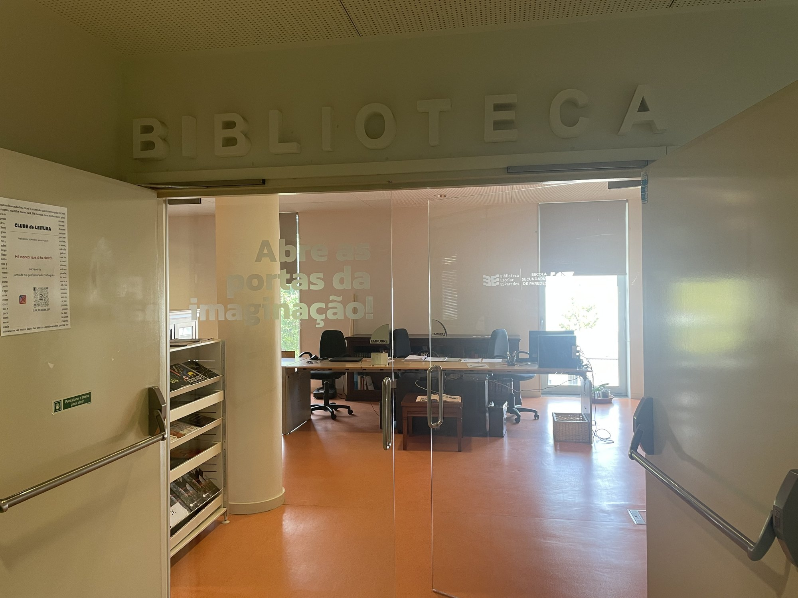

Aberta das 8h00 às 18h30 · atendimento das 8h30 às 16h00
027.8conhecer
Biblioteca Escolar da ES de Paredes
Identidade, organização e gestão transparente ao serviço da comunidade educativa da escola.
Quem somos
Somos uma equipa que acredita que uma biblioteca escolar não é apenas um local onde existem livros. É um espaço onde se investigam ideias, se desenvolvem competências, se promovem projetos e se criam oportunidades para toda a comunidade educativa.
Uma biblioteca faz mais do que guardar livros
Seis frentes de trabalho que atravessam o ano letivo e se cruzam com o currículo. Aponta ou toca em cada uma para ver o que lá está.
Conhece o espaço
Trezentos metros quadrados no bloco E, primeiro andar, com cerca de sessenta lugares. Escolhe uma zona para a ver.
A Biblioteca por dentro
Organização e transparência
Os documentos que orientam o trabalho da Biblioteca. Por opção, a documentação completa não está publicada: podes consultá-la no espaço ou pedi-la à equipa.
Como funciona a Biblioteca
Quatro passos, e nenhum deles complicado.
Perguntas frequentes
As dúvidas que nos chegam mais vezes ao balcão.
Conhece os projetos da nossa escola
A Biblioteca não trabalha sozinha. Estes são os projetos e clubes da Escola Secundária de Paredes com que nos cruzamos ao longo do ano, na pesquisa, na leitura, na produção de conteúdos ou simplesmente cedendo o espaço. A lista completa e atualizada está na página da escola.
Fala connosco
Uma dúvida, uma sugestão de compra, um pedido de apoio num trabalho. Estamos no bloco E ou a um correio de distância.